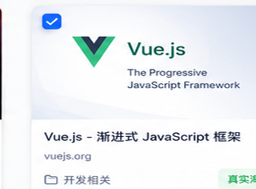
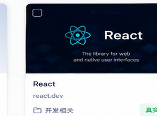
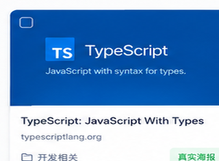

全部书签
0 个书签
0 个书签
管理海报、备份、AI 和隐私选项
基础设置只控制首页显示，不会移动、删除或访问任何网页。
首页展示保持轻量；截图、AI 和批量整理都由你主动触发。
这里保留最影响阅读和判断的设置：语言、工具栏密度、海报标签显示。
浅色面板、低对比边界和克制蓝色强调，适合长时间整理和浏览大量卡片。
截图会固定裁成海报比例；没有真实截图时使用本地预览，避免页面空白或布局跳动。
默认推荐“均衡模式”：稳定、速度适中，适合大多数书签墙。
一般电脑建议 4；截图时卡顿就降到 2。
AI 默认关闭。开启后也只会在你点击“开始预整理”时处理当前范围。
API Key 只保存在浏览器本地。真实服务商会收到你主动选择范围内的书签信息。
HTML 备份适合重新导入浏览器；JSON 备份适合检查和迁移。
移动、删除、AI 批量应用建议前，建议先导出一份完整书签。
书签本体仍由浏览器管理；插件只保存展示设置、截图缓存、AI 配置和整理建议。
这里不需要配置，主要帮助你确认每类权限的用途。
书签列表、截图缓存和设置保存在本机浏览器。
只有生成真实海报时才会打开网页并调用浏览器截图能力。
开启 AI 后，也只会处理当前可见或选中的书签。
删除、批量移动和 AI 应用建议前保留恢复入口。
建议保留备份提醒。它不会阻止你整理，只是在真正可能改动书签前多给一次确认。
一款 Manifest V3 浏览器扩展，用海报墙视图帮助整理 Chrome / Edge 原生书签。
只作为独立管理界面使用，不接管浏览器默认入口。
核心功能围绕本地浏览器书签工作。
需要你自己配置服务商并主动触发。
可在数据页导出插件配置，便于迁移或排查。
建议先从“数据”页导出书签备份，再批量整理。
将书签转换为真实网页海报，让你的书签管理更直观、更高效、更有灵感。首次进入前会先说明权限用途；点击进入管理会读取浏览器书签列表，但不会自动截图；只有你勾选确认并点击生成后才会访问网页并并发截图。
书签海报墙会读取浏览器原生书签的标题、网址、文件夹位置和添加时间，用来生成可搜索、可筛选、可移动的卡片视图。



整理前建议导出全部书签，防止误删、批量移动或 AI 应用建议导致数据丢失。
小贴士：HTML 备份可以在 Chrome / Edge 书签管理器中重新导入。